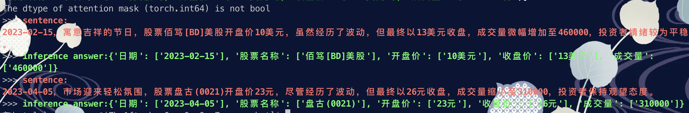

3.4 LLM实现金融文本信息抽取
基于Zero-shot方式实现LLM信息抽取¶
学习目标¶
- 掌握Zero-shot方式下prompt的设计方式
- 掌握利用LLM实现信息抽取的代码
1 LLM信息抽取任务介绍¶
- 首先，我们定义信息抽取的Schema：
# 定义不同实体下的具备属性
schema = {
'金融': ['日期', '股票名称', '开盘价', '收盘价', '成交量'],
}
- 下面几段文本来自某平台发布的股票信息：
1.'2023-02-15，寓意吉祥的节日，股票佰笃[BD]美股开盘价10美元，虽然经历了波动，但最终以13美元收盘，成交量微幅增加至460,000，投资者情绪较为平稳。',
2.'2023-04-05，市场迎来轻松氛围，股票盘古(0021)开盘价23元，尽管经历了波动，但最终以26美元收盘，成交量缩小至310,000，投资者保持观望态度。',
- 我们的目的是期望模型能够帮助我们识别出这2段话中的SPO三元组信息。
2 Prompt设计¶
-
在该任务的 prompt 设计中，我们主要考虑 2 点：
-
需要向模型解释什么叫作「信息抽取任务」
-
需要让模型按照我们指定的格式（json）输出
-
为了让模型知道什么叫做「信息抽取」，我们借用 Incontext Learning 的方式，先给模型展示几个正确的例子：
-
```
User:'2023-01-10，股市震荡。股票古哥-D[EOOE]美股今日开盘价100美元，一度飙升至105美元，随后回落至98美元，最终以102美元收盘，成交量达到520000。'。提取上述句子中“金融”('日期', '股票名称', '开盘价', '收盘价', '成交量')类型的实体，并按照JSON格式输出，上述句子中没有的信息用['原文中未提及']来表示，多个值之间用','分隔。 Bot: {'日期': ['2023-01-10'],'股票名称': ['古哥-D[EOOE]美股'],'开盘价': ['100美元'], '收盘价': ['102美元'],成交量': ['520000']} ... ```
其中，
User代表我们输入给模型的句子，Bot代表模型的回复内容。注意：上述例子中
Bot的部分也是由人工输入的，其目的是希望看到在看到类似User中的句子时，模型应当做出类似Bot的回答。
3 关系抽取任务代码实现¶
- 本章节使用的模型为ChatGLM-6B，参数参数较大（6B），下载到本地大概需要 12G+ 的磁盘空间，请确保磁盘有充足的空间。此外，加载模型大概需要 13G 左右的显存，如果您显存不够，可以进行模型量化加载以缩小模型成本。
- 本次信息抽取任务实现的主要过程：
- 构造prompt
- 先对句子做分类
- 再进行信息抽取
-
代码存放位置：/Users/**/PycharmProjects/llm/zero-shot/finance_ie.py
-
llm_information_extraction.py脚本中包含三个函数：init_prompts()、clean_response()和inference()
3.1 导入必备的工具包¶
import re
import json
from rich import print
from transformers import AutoTokenizer, AutoModel
# 定义不同实体下的具备属性
schema = {
'金融': ['日期', '股票名称', '开盘价', '收盘价', '成交量'],
}
IE_PATTERN = "{}\n\n提取上述句子中{}的实体，并按照JSON格式输出，上述句子中不存在的信息用['原文中未提及']来表示，多个值之间用','分隔。"
# 提供一些例子供模型参考
ie_examples = {
'金融': [
{
'content': '2023-01-10，股市震荡。股票古哥-D[EOOE]美股今日开盘价100美元，一度飙升至105美元，随后回落至98美元，最终以102美元收盘，成交量达到520000。',
'answers': {
'日期': ['2023-01-10'],
'股票名称': ['古哥-D[EOOE]美股'],
'开盘价': ['100美元'],
'收盘价': ['102美元'],
'成交量': ['520000'],
}
}
]
}
3.2 构建init_prompts()函数¶
- 目的：进行prompt设计
- 具体代码实现：
def init_prompts():
"""
初始化前置prompt，便于模型做 incontext learning。
"""
ie_pre_history = [
(
"现在你需要帮助我完成信息抽取任务，当我给你一个句子时，你需要帮我抽取出句子中实体信息，并按照JSON的格式输出，上述句子中没有的信息用['原文中未提及']来表示，多个值之间用','分隔。",
'好的，请输入您的句子。'
)
]
for _type, example_list in ie_examples.items():
print(f'信息抽取样本的原始句子是--》{example_list}')
for example in example_list:
sentence = example['content']
properties_str = ', '.join(schema[_type])
schema_str_list = f'“{_type}”({properties_str})'
sentence_with_prompt = IE_PATTERN.format(sentence, schema_str_list)
ie_pre_history.append((
f'{sentence_with_prompt}',
f"{json.dumps(example['answers'], ensure_ascii=False)}"
))
print(f'ie_pre_history-->{ie_pre_history}')
return {'ie_pre_history': ie_pre_history}
3.3 构建clean_response()函数¶
- 目的：模型结果后处理
- 具体代码实现
def clean_response(response: str):
"""
后处理模型输出。
Args:
response (str): _description_
"""
if '```json' in response:
res = re.findall(r'```json(.*?)```', response)
if len(res) and res[0]:
response = res[0]
response.replace('、', ',')
try:
return json.loads(response)
except:
return response
3.4 构建inference()函数¶
- 目的：模型实现信息抽取
- 具体代码实现
def inference(
sentences: list,
custom_settings: dict
):
"""
推理函数。
Args:
sentences (List[str]): 待抽取的句子。
custom_settings (dict): 初始设定，包含人为给定的 few-shot example。
"""
for sentence in sentences:
cls_res = "金融"
if cls_res not in schema:
print(f'The type model inferenced {cls_res} which is not in schema dict, exited.')
exit()
properties_str = ', '.join(schema[cls_res])
schema_str_list = f'“{cls_res}”({properties_str})'
sentence_with_ie_prompt = IE_PATTERN.format(sentence, schema_str_list)
ie_res, _ = model.chat(tokenizer, sentence_with_ie_prompt, history=custom_settings['ie_pre_history'])
ie_res = clean_response(ie_res)
print(f'>>> [bold bright_red]sentence: {sentence}')
print(f'>>> [bold bright_green]inference answer: ')
print(ie_res)
- 代码调用
if __name__ == '__main__':
#device = 'cuda:0'
device = 'cpu'
tokenizer = AutoTokenizer.from_pretrained("./ChatGLM-6B/THUDM/chatglm-6b",
trust_remote_code=True)
#model = AutoModel.from_pretrained("./ChatGLM-6B/THUDM/chatglm-6b",
# trust_remote_code=True).half().cuda()
model = AutoModel.from_pretrained("./ChatGLM-6B/THUDM/chatglm-6b",
trust_remote_code=True).float()
model.to(device)
sentences = [
'2023-02-15，寓意吉祥的节日，股票佰笃[BD]美股开盘价10美元，虽然经历了波动，但最终以13美元收盘，成交量微幅增加至460,000，投资者情绪较为平稳。',
'2023-04-05，市场迎来轻松氛围，股票盘古(0021)开盘价23元，尽管经历了波动，但最终以26美元收盘，成交量缩小至310,000，投资者保持观望态度。',
]
custom_settings = init_prompts()
inference(
sentences,
custom_settings
)
- 打印结果：

小结总结¶
本章节主要介绍了如何利用Few-shot方式基于ChatGLM-6B实现关系抽取任务。